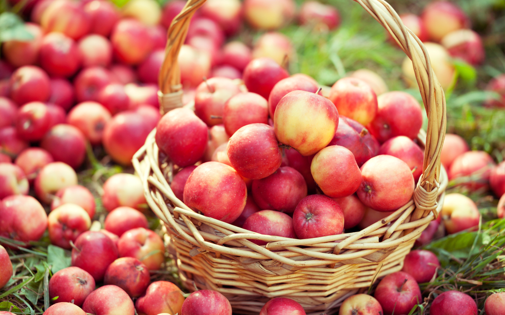

|  | Цена зависит от сорта и объёма закупки (от 1 кг). Есть плоды сладковатые, кислые, терпковатые. Идеально подходят для изготовления сидров, соков, варенья, джемов, конфитюров - под пеработку. Цвета - от жёлтых до тёмно-красных. Собственное производство. Самовывоз или доставка по России и миру в регионы через ФГУП "Почта России" и др. способами. Собраны вручную на солнечных полях Селигерского края (Селижаровский район Тверской области) в экологически чистом месте - на хуторах, вдали от фабрик, трасс, где вокруг холмы, река, 2 ручья, цветущие деревья и поля. Цена: 15-50 руб./кг |